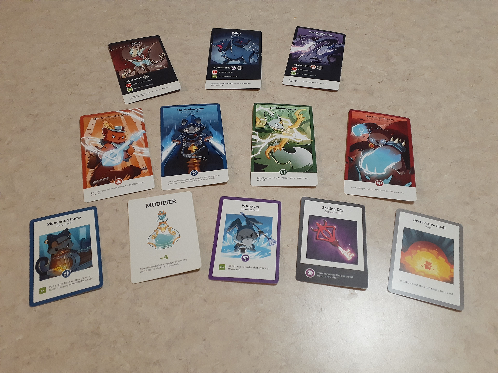

Party Games
Looking for something to spice up game night with your friends or family? These are some of our favorites that our own friends and families have enjoyed. Add some variety to your next outing and take a look at one that stands out to you!
Here to Slay
A simple card game with fun pictures. In this role-playing game, which feels reminiscent of other popular role-playing games like DnD, you pick from one of six fantasy classes, each based on a different animal. Throughout the game, you compete to either assemble all of the classes, or take down three vicious monsters. With two different ways to win, each appealing to different audiences, its a must-try for any group of gamers!
 Learn moreExploding Kittens
Exploding kittens is a simple-to-pick-up, yet still super chaotic game. Exploding kittens makes an interesting spin on Russian Roulette, where the deck is rigged with a, you guessed it, exploding kitten. But each player has tools at their disposal to try and avoid this dangerous kitty. With a bit of skill, and a lot of luck, you will be the last man standing! At an affordable price and with plenty of expansions, the deck will constantly keep you and your friends on your toes for plenty of replayability.
Learn more